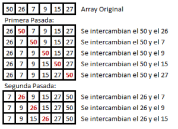

Funciona revisando cada elemento de la lista que va a ser ordenada con el siguiente, intercambiándolos de posición si están en el orden equivocado. Es necesario revisar varias veces toda la lista hasta que no se necesiten más intercambios, lo cual significa que la lista está ordenada
Este algoritmo obtiene su nombre de la forma con la que suben por la lista los elementos durante los intercambios, como si fueran pequeñas "burbujas". También es conocido como el método del intercambio directo. Dado que solo usa comparaciones para operar elementos, se lo considera un algoritmo de comparación, siendo el más sencillo de implementar.

Ibarra, A. (2019). Burbuja. [imagen] Recuperado de: https://andresibarra.files.wordpress.com/2013/04/burbuja.png?w=300&h=218 [Accedido 2 Abr. 2019].